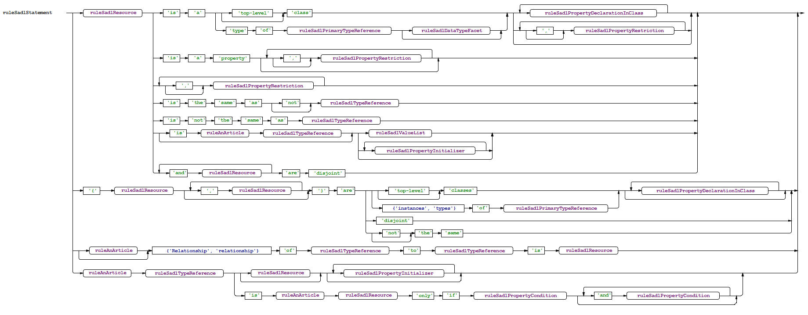

Making Changes to the SADL Grammar
Last revised
10/20/2020.
About the SADL Grammar
The SADL grammar is defined in the SADL.xtext file in the
com.ge.research.sadl project, com.ge.research.sadl package. This grammar is a
complete rework of the SADL V2 grammar by
Sven Efftinge of
TypeFox.
To make extensions or modifications to the grammar, one must have some
understanding of
Xtext grammar. No attempt will be made in this document to provide basic
training. Rather some noteworthy things about the grammar will be mentioned.
- The SADL grammar imports "http://www.eclipse.org/emf/2002/Ecore", an
Eclipse Model Framework (EMF) basis.
- White space, multi-line comments, and single-line comments are "hidden,
meaning that they are not present in the parse tree (AST). (Note: a good
reason to use the grammar's annotations, "note", "alias", "see", to capture
comments that are of importance to the generated OWL model.)
- The concept definitions, e.g., the declarations of classes, properties,
individuals, etc., are made using the grammar element SadlStatement. A variety
of grammar elements are defined in support of SadlStatement.
- Expression is a grammar element that is used in rules, queries, etc.
"Real" expressions start with ExpressionParameterized, which is at the root of
a variety of expressions s in a precedence-defining hierarchy, from lowest
precedence to highest precedent, the highest being PrimaryExpression.
- The grammar of SadlStatement and Expression do not intersect. This
dichotomy creates some constraints on the consistency of the grammar but is
not easily overcome while keeping some degree of backwards compatibility with
SADL V2.
Building After Grammar Changes
Running an MWE2 Workflow on the "GenerateSADL.mwe2" file, which is equivalent
to running "Generate Xtext Artifacts" on the SADL.xtext file, will result in the
generation of all of the classes associated with grammar elements and the
generation of the contents of the "src-gen" and "xtend-gen" folders. If, after
an change to the SADL grammar, this workflow completes without error, the
grammar is usable and the model processor (JenaBasedSadlModelProcessor) can be
changed or extended to process the new grammar elements. If, however, there are
errors in the MWE2 workflow, the grammar problems must be diagnosed and the
grammar modified until it is valid. Most problems will have to do with multiple
paths that the parser could take, which are not allowed since the parser does
not do backtracking. Backtracking is slow and makes content assistance much more
difficult.
Debugging Grammar Problems
An ANTLR grammar file is created from the SADL grammar and can be found in
the com.ge.research.sadl project, src-gen/com.ge.research.sadl.parser.antlr.intern/DebugInternalSADL.g.
This file can be loaded into ANTLRWorks
to provide insights into grammar issues. Here are the steps involved.
- Download the ANTLRWorks jar file from
https://www.antlr3.org/works/.
This Web site also provides documentation on ANTLRWorks.
- Run ANTLRWorks using an appropriate Java environment.
- Click on File -> Open and browse to the file com.ge.research.sadl/src-gen/com.ge.research.sadl.parser.antlr.intern/DebugInternalSADL.g
- The grammar "rule" elements will be shown in a list on the left-hand side.
You can click on one of these to see a syntax diagram of the rule.
- Click on Grammar -> Check Grammar to validate the grammar.
- If there are no errors you will see the dialog
- If there are errors, the grammar rules affected will be marked in the list
on the left. You can pick one or more of the marked rule(s) to see the
syntax diagram.
- The syntax diagram should help you to understand how your grammar is
ambiguous, or the cause of other problems.
The figure below shows the syntax diagram for ruleSadlStatement, as a
relatively complex example.
